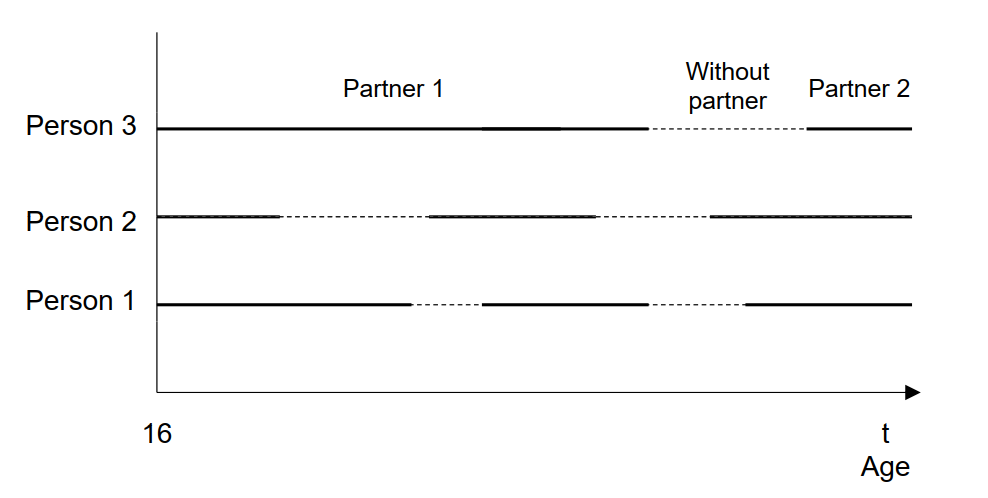
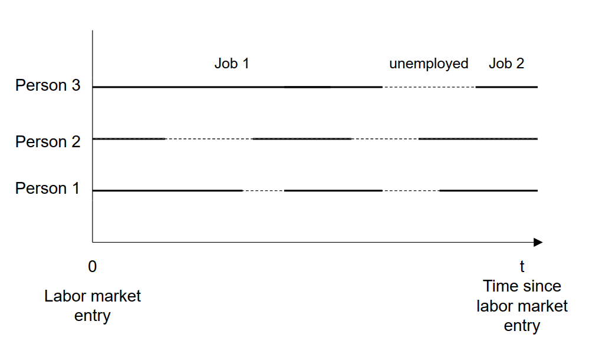
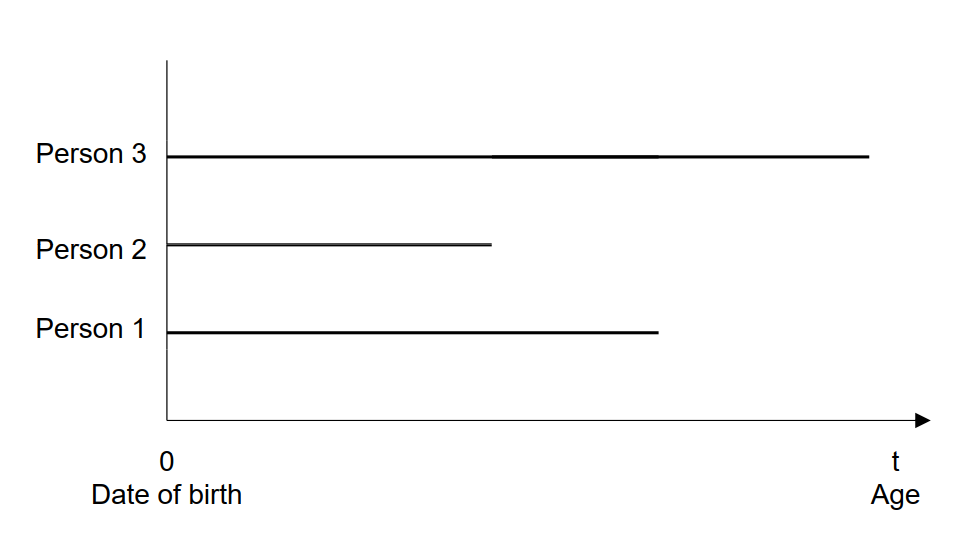
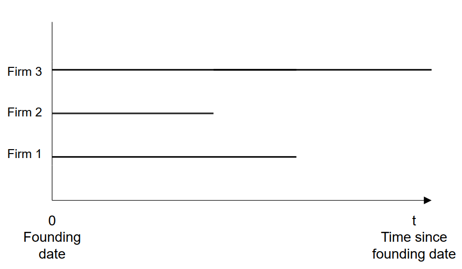
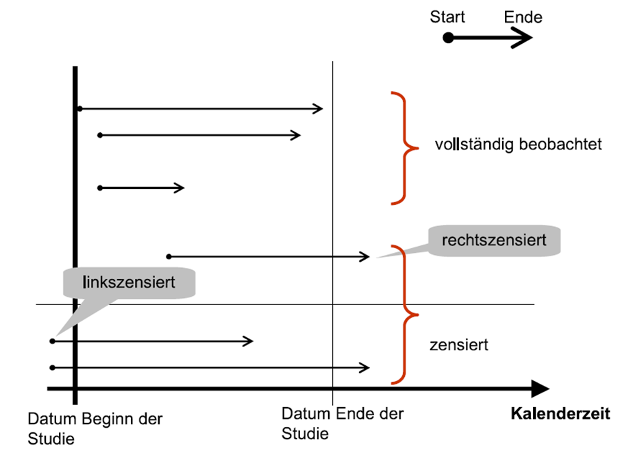
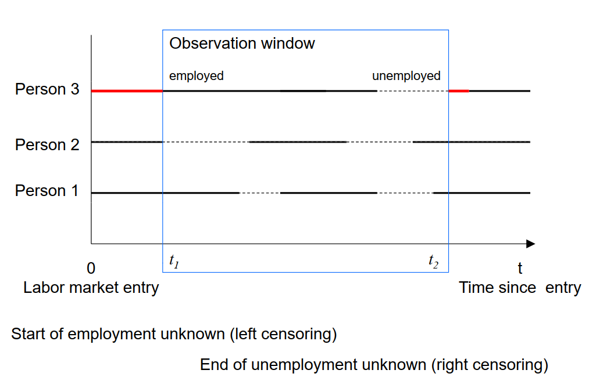
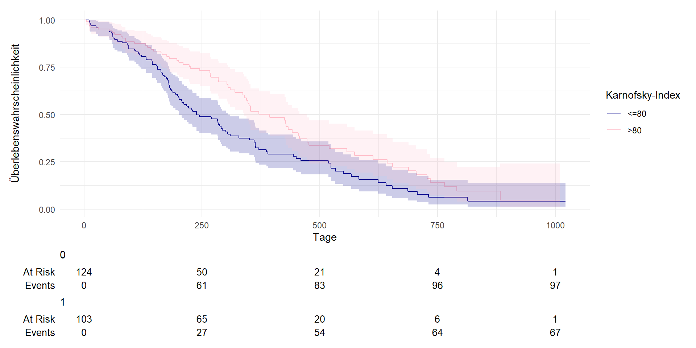
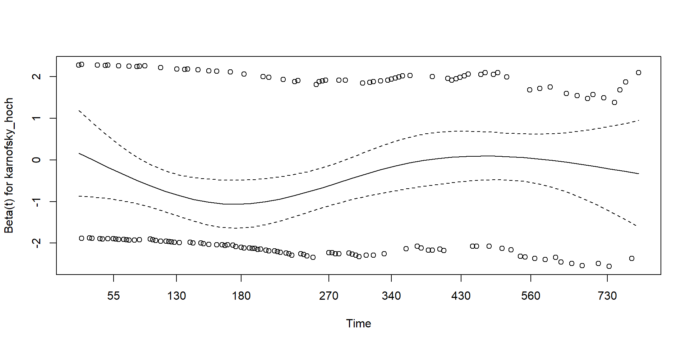

3. Seminar: Ereignisdaten
Fortgeschrittene quantitative Methoden
Wintersemester 2024-2025
Ereignisdaten
Heutige Sitzung
- Datenerhebung in den Sozialwissenschaften
- Probleme und Vorteile nicht-reaktiver Daten
- Ereignisdaten
- Ereignisdatenanalyse
Pflichtlektüre:
Watteler, O. (2022). Daten in den Sozialwissenschaften. In Forschungsstrategien in den Sozialwissenschaften (pp. 225-256). Springer VS, Wiesbaden.
Blossfeld, H. P. (2010). Survival- und Ereignisanalyse. In Handbuch der sozialwissenschaftlichen Datenanalyse (pp. 995-1016). VS Verlag für Sozialwissenschaften.
Datenerhebung in den Sozialwissenschaften
Reaktive versus nicht-reaktive Daten
| Reaktive Messung | Nicht-reaktive Messung |
|---|---|
| Umfragedaten | Amtliche Statistik / Registerdaten |
| Laborexperimente | Verhaltensspuren / digital trace data: z.B. Social Media, Smartphone, Wearables |
| Journalistische Datensätze: z. B. Reichenlisten, WikiLeaks |
Reaktive Daten: Einfluss des Messvorgangs auf die Reaktionen (=Daten) von Untersuchungspersonen, für wissenschaftliche Zwecke erhoben
Nicht-reaktive Daten: nicht mit dem Ziel der Verwendung für sozialwissenschaftliche Forschung generiert, sondern als Folge alltäglichen Verhaltens von Menschen
Probleme und Vorteile nicht-reaktiver Daten
Probleme nicht-reaktiver Daten
Generalisierbarkeit: Stichprobenprobleme / selektive Auswahl: Social Media Nutzer Over/Undercoverage (doppelte Accounts)
Archivierung/Verfügbarkeit des Materials: (plötzliche) Einschränkungen bei Facebook, Twitter API etc.
Zugang zum Material: Private Organisationen, Akteneinsicht, Zugang zu historischen Archiven
Datenschutz: Anonymisierungsproblematik, Einverständnis
Validität: Objektive Realität = subjektive Realität? („produzierte“ Daten; Facebook-“Freunde“) Artefakte (Ironie; Nutzer≠Menschen)
Keine einheitliche Definition: unkontrollierbare Datenherkunft
Vorteile prozess-produzierter Daten (gegenüber reaktiver Daten)
- Zielpersonen können per Interviews nicht erreicht werden (oder eine sehr niedrige response rate wird erwartet)
- Das soziale Phänomen liegt in der Vergangenheit (Erinnerungseffekte)
- Es wird ein falsches/verzerrtes Antwortverhalten erwartet: Sensible/heikle Fragen; soziale Erwünschtheit
Ereignisdaten
Ereignisdaten
- dokumentieren spezifische, zeitlich und/oder räumlich begrenzte Ereignisse
- Untersuchung von Zustandswechseln
- Zustände sind abzählbar
- Ereignisse können zu beliebigen Zeiten stattfinden
Beispiel: Biographie der Partnerschaft
Biographie der Partnerschaft
Beispiel: Arbeitslosigkeit
Arbeitslosigkeit
Beispiel: Sterblichkeit einer Geburtskohorte
Sterblichkeit einer Geburtskohorte
Beispiele: Überleben von start-up Firmen
Überleben von neu gegründeten Unternehmen
Ereignisdatenanalyse
Ziele der Ereignisdatenanalyse
- Analyse der Dauer bis zu bestimmten Ereignissen (Beschreibung)
- Welche Faktoren beeinflussen die Zeit bis zum Eintreten eines bestimmten Ereignisses? (Erklärung)
Anwendungsgebiete der Ereignisdatenanalyse
- Lebensverlaufsforschung
- Familiensoziologie: Entstehung von Partnerschaften, Heirat
- Arbeitsmarktsoziologie: Erwerbsverläufe, Eintritt in die Rente
- Migrationssoziologie: Wohnortswechsel
Fragestellungen:
Welche Faktoren beeinflussen die Dauer der Arbeitslosigkeit bis zum Beginn einer neuen Erwerbstätigkeit?
Welche Faktoren beeinflussen die Dauer bis zu einem Umzug an einen anderen Ort?
Grundbegriffe
Ereignis:
- Zustandswechsel von einem diskreten Zustand in einen anderen
- Einfache Zuordnung: Berufseintritt, Verrentung, Erstberufung (Professur)
- Mehrfache Zuordnung: Kündigungen, Hochzeiten, Berufungen (Professur)
Episode:
- Zeitintervall zwischen zwei Zuständen
- rechts-zensiert: Episoden zum Beobachtungsende noch nicht abgeschlossen
- links-zensiert: Informationen nur nach einem bestimmten Ereignis bekannt
Grundbegriffe
Aus: Windzio, M. (2013). Regressionsmodelle für Zustände und Ereignisse: Eine Einführung. Springer-Verlag, S. 88.
Grundbegriffe
Grundbegriffe
Prozesszeit/Verweildauer:
- Dauer der Episode (bis zum Eintreten des Ereignisses oder bis zur Zensierung)
- Nullpunkt wird definiert (z.B. Geburt, Jahr, Erste Arbeitslosigkeit)
Risikomenge:
- Anzahl der Untersuchungseinheiten, die dem Zustandswechsel ausgesetzt sind
Analyseverfahren
- Nicht-parametrische Verfahren (deskriptive Verfahren)
- Keine Annahmen über Verteilung, nur über Wirkungsweisen von Variablen
- Beispiel: Kaplan-Meier, Sterbetafelmethode
- Parametrische Regressionsmodelle
- Verlauf der Hazardrate (baseline hazard) wird spezifiziert
- Kovariateneinflüsse werden spezifiziert
- Beispiel: Exponentialmodell, Weibull-Modell, Gompertz-Modell
- Semi-parametrische Regressionsmodelle
- Verlauf der Hazardrate bleibt unspezifiziert
- Kovariateneinflüsse werden spezifiziert
- Beispiel: Cox-Regressionen
Analyseverfahren
Analyse erfolgt idR in 2 Schritten:
- Deskriptive Verfahren
- Multivariates Regressionsmodell
Los geht’s
Package “survival”
Wir nutzen das R-Paket {survival} für unsere Ereignisdatenanalyse.
Lungenkrebsdaten
Wir möchten das Überleben von PatientInnen mit fortgeschrittenem Lungenkrebs aus der “North Central Cancer Treatment Group” untersuchen. Schauen wir uns an, welche Variablen im Datensatz vorhanden sind:
Datenaufbereitung
Wir brauchen für unsere Analyse 3 Variablen:
- dead (0: lebend, 1: tot)
- Karnofsky-Index (0: <=80 [niedrig], 1: >80 [hoch])
- time (Tage)
Erstellen von “survival objects”
Die Surv() Funktion aus dem the {survival} Paket erstellt ein “survival object”. Schauen wir und die ersten 10 Beobachtungen an:
100-Tage Überlebenswahrscheinlichkeit
Untersuchen wir die Überlebenswahrscheinlichkeit nach X Tagen:
Erstellen von Kaplan-Meier Kurven
Kaplan-Meier-Formel zur Schätzung der Überlebensfunktion:
\[ \widehat{S}(t) = \prod_{i: t_i \leq t} \left(1 - \frac{d_i}{n_i}\right) \]
\(\widehat{S}(t)\): Geschätzte Wahrscheinlichkeit, dass Individuum über den Zeitpunkt \(t\) hinaus überlebt.
\(\prod\): Produktsymbol. Überlebenswahrscheinlichkeit \(\widehat{S}(t)\)wird durch Multiplikation berechnet wird.
\(t_i\): Zeitpunkt, an dem ein Ereignis beobachtet wird
\(d_i\): Anzahl der Ereignisse, die zum Zeitpunkt \(t_i\) eintreten.
\(n_i\): Anzahl der Personen, die unmittelbar vor dem Zeitpunkt \(t_i\) noch „at risk“ sind
\(\left(1 - \frac{d_i}{n_i}\right)\): Anteil der Überlebenden zum Zeitpunkt \(t_i\).
Erstellen von Kaplan-Meier Kurven
Kaplan-Meier-Methode gängigste Methode zur Visualisierung von Überlebenswahrscheinlichkeiten

Erstellen von Kaplan-Meier Kurven
Probiert selbst:
Erstellen von Kaplan-Meier Kurven nach Karnofsky-Index
Unterscheiden sich PatientInnen mit niedrigem oder hohem Karnofsky-Index?

survfit2(Surv(time, dead) ~ karnofsky_hoch, data = df) %>%
ggsurvfit() +
labs(
x = "Tage",
y = "Überlebenswahrscheinlichkeit",
color = "Karnofsky-Index"
)+
add_confidence_interval() +
add_risktable() +
scale_color_manual(values = c('darkblue', 'pink'), labels = c("<=80", ">80") ) +
scale_fill_manual(values = c('darkblue', 'pink'), labels = c("<=80", ">80") ) +
theme_minimal() + guides(fill = "none")
Cox Proportional Hazards Model
\(h(t) = h_0(t)*exp(X\beta)\)
- Abhängige Variable: \(h(t)\)
- Hazardrate (hazard)
- „momentane Neigung einer Untersuchungseinheit, im nächsten Augenblick ein Ereignis zu erleben“
- Basline-Hazard \(h_0(t)\)
- nicht-parametrisch geschätzt (keine Verteilungsannahme)
- Konstante steckt in der Baseline Hazardrate
- Regressionskoeffizient \(\beta\):
- \(X\) können proportionale Änderungen der Hazardrate bewirken
- Veränderung der log. Hazardrate, wenn sich unabhängige Variable um eine Einheit erhöht
- Berechnung der Hazard-Ratio: \(HR = exp(\beta)\)
- HR < 1: verringertes Sterberisiko
- HR > 1: erhöhtes Sterberisiko
Cox Proportional Hazards Model
\(h(t) = h_0(t)*exp(X\beta)\)
- Partial-Likelihood-Methode
- Genauer Zeitpunkt des Ereignisses irrelevant, sondern Reihenfolgen
- Keine Verteilungsannahme über die Hazardrate
- Bedindung: Proportionalitätsannahme muss erfüllt sein (da proportionalle Änderungen der Hazardrate geschätzt werden)
Cox Proportional Hazards Model
Call:
coxph(formula = Surv(time, dead) ~ karnofsky_hoch, data = df)
n= 227, number of events= 164
(1 observation deleted due to missingness)
coef exp(coef) se(coef) z Pr(>|z|)
karnofsky_hoch -0.4436 0.6417 0.1596 -2.78 0.00544 **
---
Signif. codes: 0 '***' 0.001 '**' 0.01 '*' 0.05 '.' 0.1 ' ' 1
exp(coef) exp(-coef) lower .95 upper .95
karnofsky_hoch 0.6417 1.558 0.4694 0.8774
Concordance= 0.569 (se = 0.022 )
Likelihood ratio test= 7.88 on 1 df, p=0.005
Wald test = 7.73 on 1 df, p=0.005
Score (logrank) test = 7.85 on 1 df, p=0.005Call:
coxph(formula = Surv(time, dead) ~ karnofsky_hoch, data = df)
n= 227, number of events= 164
(1 observation deleted due to missingness)
coef exp(coef) se(coef) z Pr(>|z|)
karnofsky_hoch -0.4436 0.6417 0.1596 -2.78 0.00544 **
---
Signif. codes: 0 '***' 0.001 '**' 0.01 '*' 0.05 '.' 0.1 ' ' 1
exp(coef) exp(-coef) lower .95 upper .95
karnofsky_hoch 0.6417 1.558 0.4694 0.8774
Concordance= 0.569 (se = 0.022 )
Likelihood ratio test= 7.88 on 1 df, p=0.005
Wald test = 7.73 on 1 df, p=0.005
Score (logrank) test = 7.85 on 1 df, p=0.005Cox Proportional Hazards Model, Interpretation
Das Risiko zu sterben (in jedem kurzen Zeitraum) ist höher bei Personen mit einem Karnofsky-Index kleiner-gleich 80 im Vergleich zu Personen mit einem Karnofsky-Index über 80.
Hazard-Ratio: Personen mit einem Karnofsky-Index über 80 haben ein 36% geringeres Risiko zu sterben (in jedem kurzen Zeitraum) als Personen mit einem Karnofsky-Index unter/gleich 80. Oder: Personen mit einem Karnofsky-Index über 80 haben ein 0.64 mal so hohes Risiko zu sterben (in jedem kurzen Zeitraum) wie Personen mit einem Karnofsky-Index unter/gleich 80.
- HR < 1: verringertes Sterberisiko
- HR > 1: erhöhtes Sterberisiko
Proportionalitätsannahme
Nun testen wir die Proportionalitätsannahme.
Nullhypothese: Hazard-Raten proportional, also kein Zusammenhang mit der Zeit
Ende
Dieser Foliensatz profitierte in großen Teilen von ehemaligen Veranstaltungen von Isabel Habicht sowie von Hans-Jürgen Andreß
Weitere Literatur: